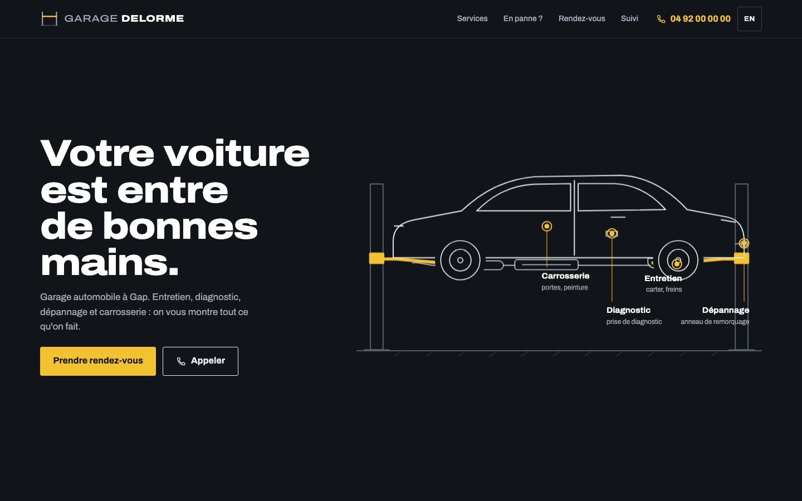
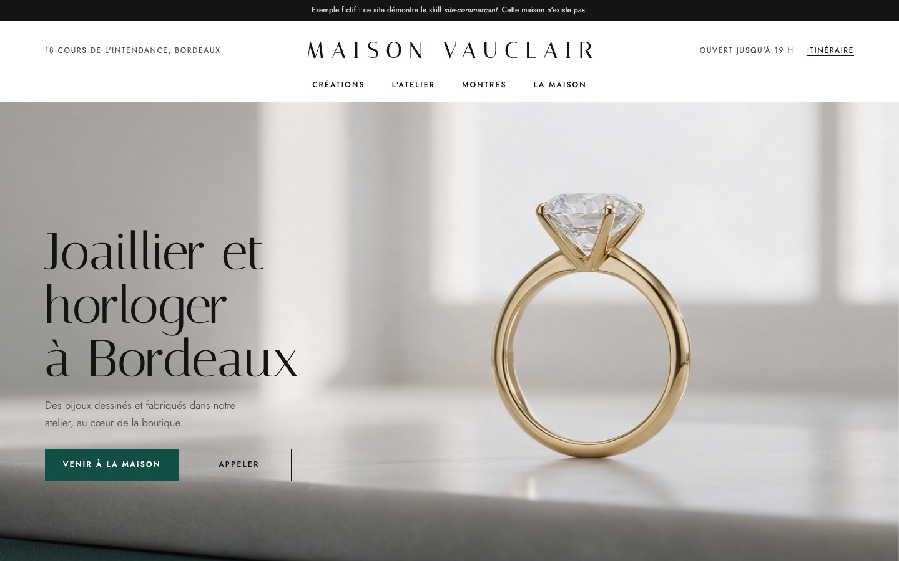
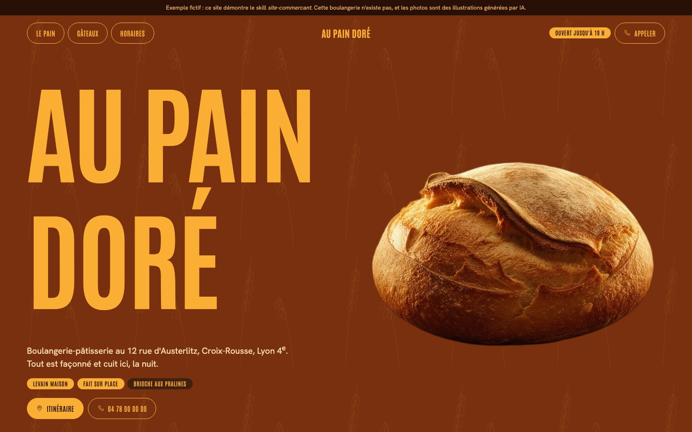

Un site d'agence pour chaque commerce.
Un skill pour Claude Code qui crée, avec le commerçant et de A à Z, un site sur mesure. Il commence par un entretien, puis apporte un design unique, des animations, des fonctions qui marchent vraiment, le référencement Google et un hébergement gratuit.

Garage Delorme
La voiture monte sur le pont quand on fait défiler la page, et les services s'épinglent sur les pièces. On peut prendre rendez-vous, demander un devis et suivre sa réparation avec un code. Version anglaise pour les touristes.
- Animation au défilement
- Rendez-vous et devis
- Suivi de réparation
- FR / EN

Maison Vauclair
Une joaillerie au luxe sobre, au niveau de finition des grandes maisons : beaucoup d'espace, une typographie très fine, une couleur signature, l'atelier mis en avant.
- Luxe sobre
- Atelier de création
- Ouvert maintenant

Au Pain Doré
Une affiche de marché : le nom en lettres géantes, un seul or « croûte » sur un brun de four, les pains posés à même le fond. Le site a été construit à partir d'une fiche de style de référence, traduite pour la boulangerie.
- Style de référence traduit
- Demande de gâteau
- « Ouvert » en direct
Trois commerces fictifs, créés avec le skill. Les photos sont des illustrations générées par IA. Pour un vrai commerce, ce sont ses propres photos.
Comment ça marche
L'entretien
Claude pose les bonnes questions : le commerce, la clientèle, l'ambiance voulue, les sites qu'on aime, ce qui rend le lieu unique, et ce que le site doit permettre.
Le choix de l'univers
Plusieurs pistes visuelles s'affichent dans le navigateur. Le commerçant choisit, et le site est construit dans cet univers par le skill de design impeccable.
Le site, vérifié et en ligne
Il est relu par un réviseur indépendant, conforme à la loi française, pensé pour Google, puis mis en ligne gratuitement. Rien n'est inventé : ce qui manque est signalé.
Installer en une minute
/plugin marketplace add pbakaus/impeccable
/plugin install impeccable@impeccable
/plugin marketplace add mamyrva/site-commercant
/plugin install site-commercant@site-commercant
/reload-pluginsPuis, dans Claude Code : /site-commercant, suivi d'une phrase sur votre commerce. Il faut Claude Code et un abonnement Claude.
Un projet qui évolue
- De nouveaux métiers et de nouvelles démos, à chaque test.
- Une version légale pour la Belgique, la Suisse et le Canada.
- Une interface d'administration prête à l'emploi pour les commerçants.
- Des vidéos de présentation en motion design.